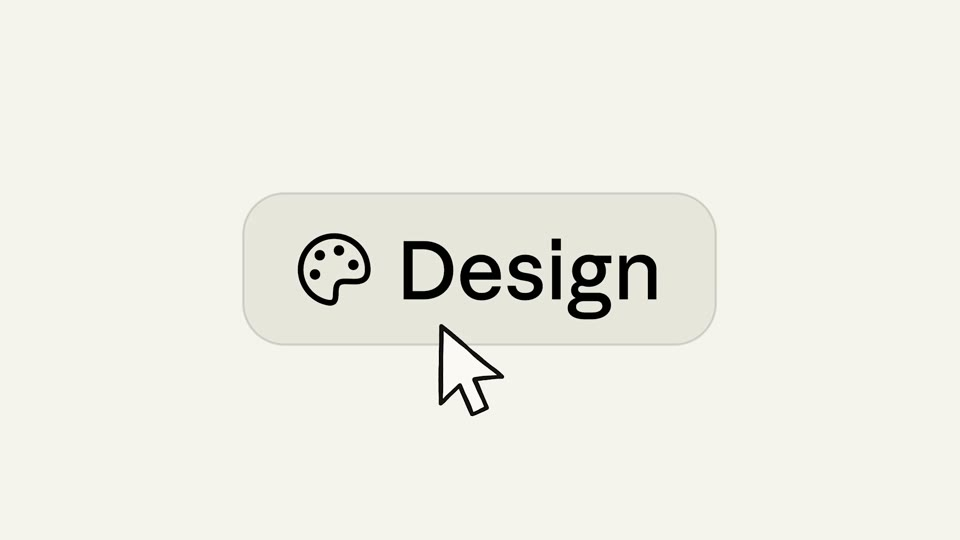
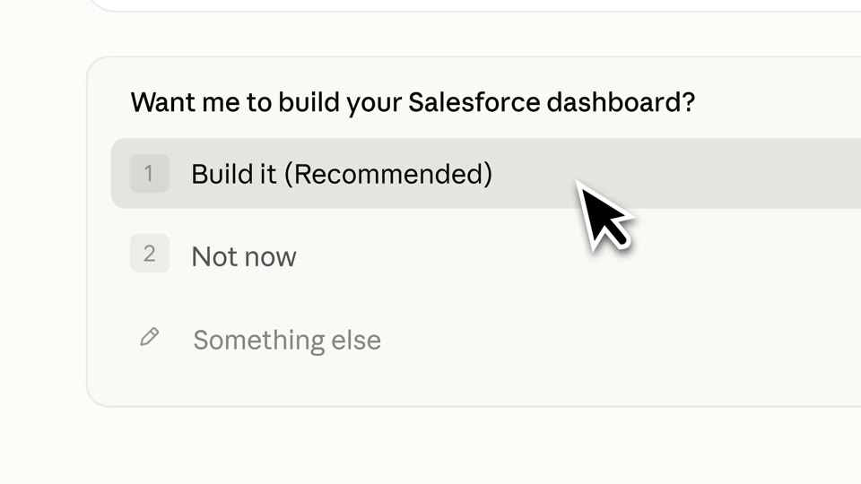

Poster-scale UI on a paper world
Real UI recomposed like a poster: one card or row fills half the frame on a warm paper ground or a patterned pastel wallpaper, driven by a big cursor, with short lines of type between.




The rules
Warm flat grounds (#E2DACD, #F4F4EC), or pastel grounds with a white hand-drawn wave pattern (mint #BDD5C8, lavender #CCCAD8).
One control or card at 40–81% of the width, cropped hard by the frame. An oversized cursor (14–17% of height) drives each beat.
Lines fade in word by word (0.08 s stagger) at 5.5–7.4% of height, centred.
One full-bleed brand-colour card, for the hook or for the turn.
Few cuts; the camera zooms through the UI. Near-silence until the first result.
End: dot → spark → the wordmark types on, held in silence.
For Kallo
Kallo’s cream and tan already live here. Swap the serif for Be Vietnam Pro, terracotta for tan, and the wave for a pattern only food would have (a tablecloth weave, a dot grid). The meal input becomes a poster-scale card on cream, one row at a time.
The warmest fit with Kallo’s palette, and honest product footage.
Cream, warm and one accent is Anthropic’s signature. Kallo on cream will read as a Claude film unless the type and the pattern are clearly Kallo’s.
Films
Claude · Dispatch · 78M views
Claude · Claude Design · 65M views
Claude · Claude for Office · 28M views
Claude · Claude Managed Agents · 22M views
Claude · Computer use · 16M views
Claude · Connectors: Fusion · 13M views
Claude · Claude connector for Blender · 13M views
Claude · Claude for Word · 12M views
Claude · Auto mode · 8M views
Claude · Agent view · 6M views
Claude · Claude Code desktop · 6M views
Claude · Artifacts in Claude Code · 5M views
Claude · Salesforce · 5M views
Claude · Cowork · 5M views